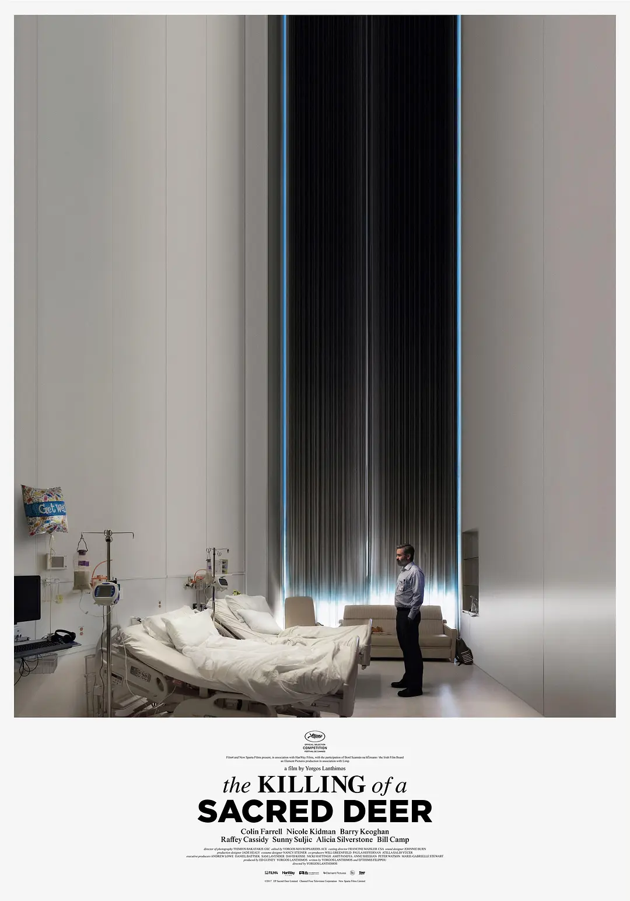

小饰界
圣鹿之死 The Killing of a Sacred Deer (2017)
导演：欧格斯·兰斯莫斯 Yorgos Lanthimos
片长：121min
语言：英语
观众：4

人咬狗 C'est arrivé près de chez vous (1992)
导演：Rémy Belvaux / André Bonzel / 伯努瓦·波尔沃德
片长：95min
语言：法语
观众：4
白痴 Idioterne (1998)
拉斯·冯·提尔 Lars von Trier
片长：117min
语言：丹麦语
观众：5